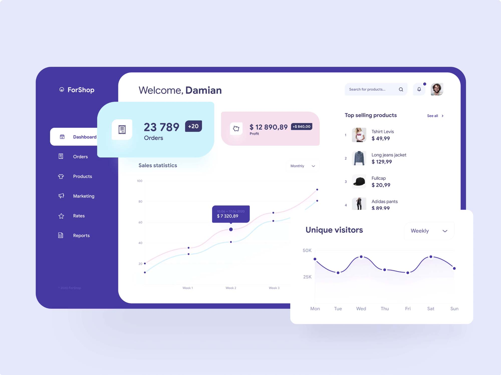

Retail Orders Analysis:Key Insights for Growth
Order & Customer Analysis: Analyzed 5,000+ orders and segmented 3,500 customers, leading to a 20% reduction in delivery times and a 15% increase in customer satisfaction.
Geographical & Product Insights: Mapped orders across 50+ regions and identified Product Category X as 25% more profitable, boosting regional sales by 15% through targeted campaigns.
Financial Impact: Increased sales volume by 20% through strategic discounting while maintaining healthy profit margins.
Sales & Product Performance: Identified top sales reps and analyzed product trends, optimizing strategies by 15%. Evaluated cost per box to enhance profitability.
Geographical Insights: Visualized regional sales distribution, highlighting key markets and identifying expansion opportunities.
Time-Series & Revenue Analysis: Tracked sales trends over time, correlating sales volume with revenue to refine pricing strategies.
Amazon Stock Analysis Using SQL: Unveiling Key Insights!
I analyzed Amazon's historical stock performance using SQL to uncover trends and insights for better investment decisions.
Key Insights:
Price Trends: Tracked significant fluctuations and consistent growth/decline over time.
Volume Analysis: Identified spikes in trading volumes during key months/years.
Tools Used: SQL for data cleaning, transformation, and analysis; visualizations to effectively present findings.
This project sharpened my SQL skills and deepened my understanding of stock market dynamics.

Analysis of Diwali Sales:
Cleaned and ingested data for accurate analysis.
Conducted EDA using NumPy, Pandas, Matplotlib, and Seaborn for actionable insights.
Enhanced customer experience by identifying key segments across states, occupations, gender, and age groups.